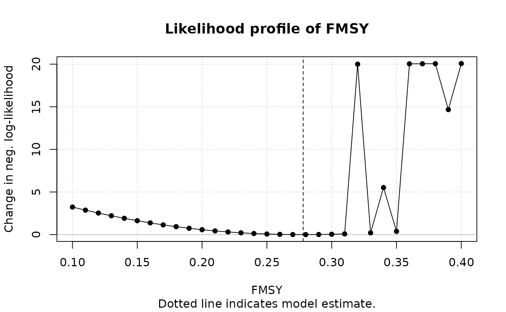
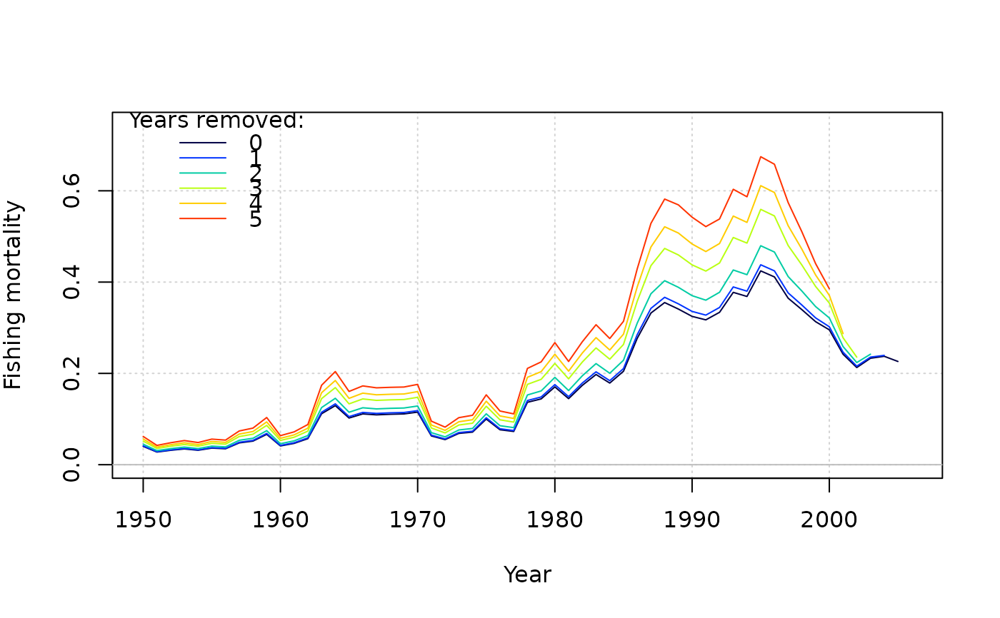
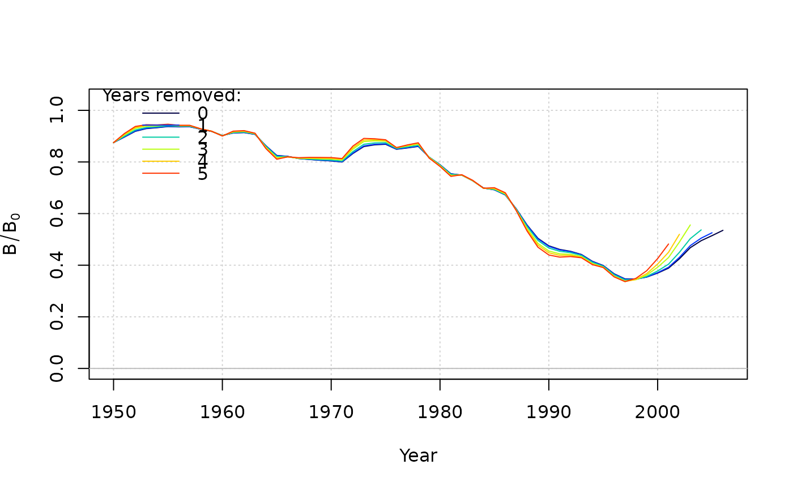
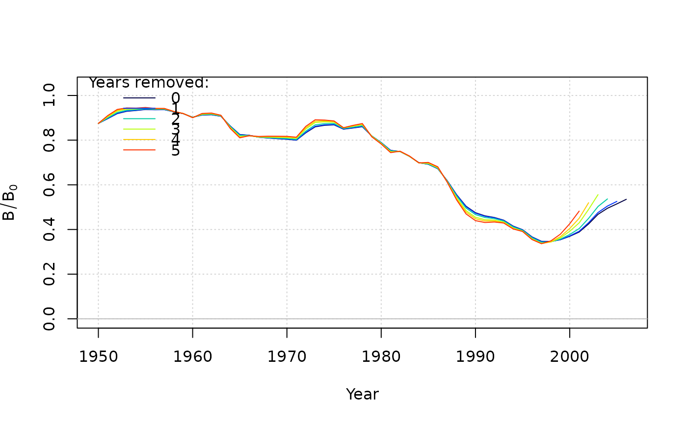

A surplus production model that uses only a time-series of catches and a relative abundance index
and coded in TMB. The base model, SP, is conditioned on catch and estimates a predicted index.
Continuous surplus production and fishing is modeled with sub-annual time steps which should approximate
the behavior of ASPIC (Prager 1994). The Fox model, SP_Fox, fixes BMSY/K = 0.37 (1/e).
The state-space version, SP_SS estimates annual deviates in biomass. An option allows for setting a
prior for the intrinsic rate of increase.
The function for the spict model (Pedersen and Berg, 2016) is available in MSEextra.
SP(
x = 1,
Data,
AddInd = "B",
rescale = "mean1",
start = NULL,
fix_dep = TRUE,
fix_n = TRUE,
LWT = NULL,
n_seas = 4L,
n_itF = 3L,
use_r_prior = FALSE,
r_reps = 100,
SR_type = c("BH", "Ricker"),
silent = TRUE,
opt_hess = FALSE,
n_restart = ifelse(opt_hess, 0, 1),
control = list(iter.max = 5000, eval.max = 10000),
...
)
SP_SS(
x = 1,
Data,
AddInd = "B",
rescale = "mean1",
start = NULL,
fix_dep = TRUE,
fix_n = TRUE,
fix_sigma = TRUE,
fix_tau = TRUE,
LWT = NULL,
early_dev = c("all", "index"),
n_seas = 4L,
n_itF = 3L,
use_r_prior = FALSE,
r_reps = 100,
SR_type = c("BH", "Ricker"),
integrate = FALSE,
silent = TRUE,
opt_hess = FALSE,
n_restart = ifelse(opt_hess, 0, 1),
control = list(iter.max = 5000, eval.max = 10000),
inner.control = list(),
...
)
SP_Fox(x = 1, Data, ...)Arguments
- x
An index for the objects in
Datawhen running in runMSE. Otherwise, equals to 1 When running an assessment interactively.- Data
An object of class Data.
- AddInd
A vector of integers or character strings indicating the indices to be used in the model. Integers assign the index to the corresponding index in Data@AddInd, "B" (or 0) represents total biomass in Data@Ind, "VB" represents vulnerable biomass in Data@VInd, and "SSB" represents spawning stock biomass in Data@SpInd.
- rescale
A multiplicative factor that rescales the catch in the assessment model, which can improve convergence. By default,
"mean1"scales the catch so that time series mean is 1, otherwise a numeric. Output is re-converted back to original units.- start
Optional list of starting values. Entries can be expressions that are evaluated in the function. See details.
- fix_dep
Logical, whether to fix the initial depletion (ratio of biomass to carrying capacity in the first year of the model). If
TRUE, uses the value instart, otherwise equal to 1 (unfished conditions).- fix_n
Logical, whether to fix the exponent of the production function. If
TRUE, uses the value instart, otherwise equal ton = 2, where the biomass at MSY is half of carrying capacity.- LWT
A vector of likelihood weights for each survey.
- n_seas
Integer, the number of seasons in the model for calculating continuous surplus production.
- n_itF
Integer, the number of iterations to solve F conditional on the observed catch given multiple seasons within an annual time step. Ignored if
n_seas= 1.- use_r_prior
Logical, whether a prior for the intrinsic rate of increase will be used in the model. See details.
- r_reps
If
use_r_prior = TRUE, the number of samples of natural mortality and steepness for calculating the mean and standard deviation of the r prior. To override and directly provide the r-prior mean and standard deviation, use the start list, e.g.start = list(r_prior = c(0.1, 0.05))(mean of 0.1 and s.d. of 0.05).- SR_type
If
use_r_prior = TRUE, the stock-recruit relationship used to calculate the stock-recruit alpha parameter from steepness and unfished spawners-per-recruit. Used to develop the r prior.- silent
Logical, passed to
MakeADFun, whether TMB will print trace information during optimization. Used for diagnostics for model convergence.- opt_hess
Logical, whether the hessian function will be passed to
nlminbduring optimization (this generally reduces the number of iterations to convergence, but is memory and time intensive and does not guarantee an increase in convergence rate). Ignored ifintegrate = TRUE.- n_restart
The number of restarts (calls to
nlminb) in the optimization procedure, so long as the model hasn't converged. The optimization continues from the parameters from the previous (re)start.- control
A named list of parameters regarding optimization to be passed to
nlminb.- ...
For
SP_Fox, additional arguments to pass toSP.- fix_sigma
Logical, whether the standard deviation of the index is fixed. If
TRUE, sigma is fixed to value provided instart(if provided), otherwise, value based onData@CV_Ind.- fix_tau
Logical, the standard deviation of the biomass deviations is fixed. If
TRUE, tau is fixed to value provided instart(if provided), otherwise, equal to 0.1.- early_dev
Character string describing the years for which biomass deviations are estimated in
SP_SS. By default, deviations are estimated in each year of the model ("all"), while deviations could also be estimated once index data are available ("index").- integrate
Logical, whether the likelihood of the model integrates over the likelihood of the biomass deviations (thus, treating it as a state-space variable).
- inner.control
A named list of arguments for optimization of the random effects, which is passed on to newton via
MakeADFun.
Value
An object of Assessment containing objects and output from TMB.
Details
For start (optional), a named list of starting values of estimates can be provided for:
MSYMaximum sustainable yield.. Otherwise, 300% of mean catch by default.FMSYSteepness. Otherwise, Data@Mort[x] or 0.2 is used.depInitial depletion (B/B0) in the first year of the model. By default, 1.nThe production function exponent that determines BMSY/B0. By default, 2 so that BMSY/B0 = 0.5.sigmaLognormal SD of the index (observation error). By default, 0.05. Not used with multiple indices.tauLognormal SD of the biomass deviations (process error) inSP_SS. By default, 0.1.
Multiple indices are supported in the model.
If use_r_prior = TRUE, SP and SP_SS will use a prior for the intrinsic rate of increase in the objective function.
A vector of length two can be passed in the start list for the mean and standard deviation of the prior (see example). The normal
distribution is used.
If no values are provided, a prior is created using the Euler-Lotka method (Equation 15a of McAllister et al. 2001).
The Euler-Lotka method is modified to multiply the left-hand side of equation 15a by the alpha parameter of the
stock-recruit relationship (Stanley et al. 2009). Natural mortality and steepness are sampled in order to generate
a prior distribution for r. See vignette("Surplus_production") for more details.
Note
The model uses the Fletcher (1978) formulation and is parameterized with FMSY and MSY as leading parameters. The default conditions assume unfished conditions in the first year of the time series and a symmetric production function (n = 2).
Tip: to create the Fox model (Fox 1970), just fix n = 1. See example.
Online Documentation
Model description and equations are available on the openMSE website.
Required Data
SP: Cat, IndSP_SS: Cat, Ind
Optional Data
SP_SS: CV_Ind
References
Fletcher, R. I. 1978. On the restructuring of the Pella-Tomlinson system. Fishery Bulletin 76:515:521.
Fox, W.W. 1970. An exponential surplus-yield model for optimizing exploited fish populations. Transactions of the American Fisheries Society 99:80-88.
McAllister, M.K., Pikitch, E.K., and Babcock, E.A. 2001. Using demographic methods to construct Bayesian priors for the intrinsic rate of increase in the Schaefer model and implications for stock rebuilding. Can. J. Fish. Aquat. Sci. 58: 1871-1890.
Pedersen, M. W. and Berg, C. W. 2017. A stochastic surplus production model in continuous time. Fish and Fisheries. 18:226-243.
Pella, J. J. and Tomlinson, P. K. 1969. A generalized stock production model. Inter-Am. Trop. Tuna Comm., Bull. 13:419-496.
Prager, M. H. 1994. A suite of extensions to a nonequilibrium surplus-production model. Fishery Bulletin 92:374-389.
Stanley, R.D., M. McAllister, P. Starr and N. Olsen. 2009. Stock assessment for bocaccio (Sebastes paucispinis) in British Columbia waters. DFO Can. Sci. Advis. Sec. Res. Doc. 2009/055. xiv + 200 p.
Examples
data(swordfish)
#### Observation-error surplus production model
res <- SP(Data = swordfish)
# Provide starting values, assume B/K = 0.875 in first year of model
# and symmetrical production curve (n = 2)
start <- list(dep = 0.875, n = 2)
res <- SP(Data = swordfish, start = start)
# \donttest{
plot(res)
#> Writing markdown file: /var/folders/24/8k48jl6d249_n_qfxwsl6xvm0000gn/T//RtmpbDKD37/report_SP.Rmd
#> Rendering markdown file...
#> Rendered file: /private/var/folders/24/8k48jl6d249_n_qfxwsl6xvm0000gn/T/RtmpbDKD37/report_SP.html
profile(res, FMSY = seq(0.1, 0.4, 0.01))

#> An object of class "prof"
#> Slot "Model":
#> [1] "SP"
#>
#> Slot "Name":
#> [1] "North Atlantic Swordfish (Source: ASPIC software)"
#>
#> Slot "Par":
#> [1] "FMSY"
#>
#> Slot "MLE":
#> [1] 0.2779916
#>
#> Slot "grid":
#> FMSY MSY nll
#> 1 0.10 14279.16 3.2294940699
#> 2 0.11 14279.16 2.8709621889
#> 3 0.12 14279.16 2.5306098844
#> 4 0.13 14279.16 2.2099100337
#> 5 0.14 14279.16 1.9099783048
#> 6 0.15 14279.16 1.6316339875
#> 7 0.16 14279.16 1.3754432106
#> 8 0.17 14279.16 1.1417518078
#> 9 0.18 14279.16 0.9307119587
#> 10 0.19 14279.16 0.7423048923
#> 11 0.20 14279.16 0.5763609104
#> 12 0.21 14279.16 0.4325774337
#> 13 0.22 14279.16 0.3105354898
#> 14 0.23 14279.16 0.2097149079
#> 15 0.24 14279.16 0.1295084067
#> 16 0.25 14279.16 0.0692347101
#> 17 0.26 14279.16 0.0281507868
#> 18 0.27 14279.16 0.0054632851
#> 19 0.28 14279.16 0.0003392047
#> 20 0.29 14279.16 0.0119158312
#> 21 0.30 14279.16 0.0393099433
#> 22 0.31 14279.16 0.0816262912
#> 23 0.32 14279.16 0.1379653440
#> 24 0.33 14279.16 0.2074302985
#> 25 0.34 14279.16 0.2891333485
#> 26 0.35 14279.16 0.3822012176
#> 27 0.36 14279.16 0.4857799664
#> 28 0.37 14279.16 0.5990390917
#> 29 0.38 14279.16 0.7211749445
#> 30 0.39 14279.16 0.8514134997
#> 31 0.40 14279.16 0.9890125181
#>
retrospective(res)

 #> Mohn's rho
#> Fishing mortality 0.129
#> F/F[MSY] -0.145
#> Biomass -0.091
#> B/B[MSY] 0.152
#> B/B[0] 0.152
# }
#### State-space version
res_SS <- SP_SS(Data = swordfish, start = list(dep = 0.875, sigma = 0.1, tau = 0.1))
# \donttest{
plot(res_SS)
#> Writing markdown file: /var/folders/24/8k48jl6d249_n_qfxwsl6xvm0000gn/T//RtmpbDKD37/report_SP_SS.Rmd
#> Rendering markdown file...
#> Rendered file: /private/var/folders/24/8k48jl6d249_n_qfxwsl6xvm0000gn/T/RtmpbDKD37/report_SP_SS.html

# }
#### Fox model
res_Fox <- SP(Data = swordfish, start = list(n = 1), fix_n = TRUE)
res_Fox2 <- SP_Fox(Data = swordfish)
#### SP with r_prior
res_prior <- SP(Data = SimulatedData, use_r_prior = TRUE)
#### Pass an r_prior to the model with mean = 0.35, sd = 0.10
res_prior2 <- SP(Data = SimulatedData, use_r_prior = TRUE, start = list(r_prior = c(0.35, 0.10)))
#> Mohn's rho
#> Fishing mortality 0.129
#> F/F[MSY] -0.145
#> Biomass -0.091
#> B/B[MSY] 0.152
#> B/B[0] 0.152
# }
#### State-space version
res_SS <- SP_SS(Data = swordfish, start = list(dep = 0.875, sigma = 0.1, tau = 0.1))
# \donttest{
plot(res_SS)
#> Writing markdown file: /var/folders/24/8k48jl6d249_n_qfxwsl6xvm0000gn/T//RtmpbDKD37/report_SP_SS.Rmd
#> Rendering markdown file...
#> Rendered file: /private/var/folders/24/8k48jl6d249_n_qfxwsl6xvm0000gn/T/RtmpbDKD37/report_SP_SS.html

# }
#### Fox model
res_Fox <- SP(Data = swordfish, start = list(n = 1), fix_n = TRUE)
res_Fox2 <- SP_Fox(Data = swordfish)
#### SP with r_prior
res_prior <- SP(Data = SimulatedData, use_r_prior = TRUE)
#### Pass an r_prior to the model with mean = 0.35, sd = 0.10
res_prior2 <- SP(Data = SimulatedData, use_r_prior = TRUE, start = list(r_prior = c(0.35, 0.10)))